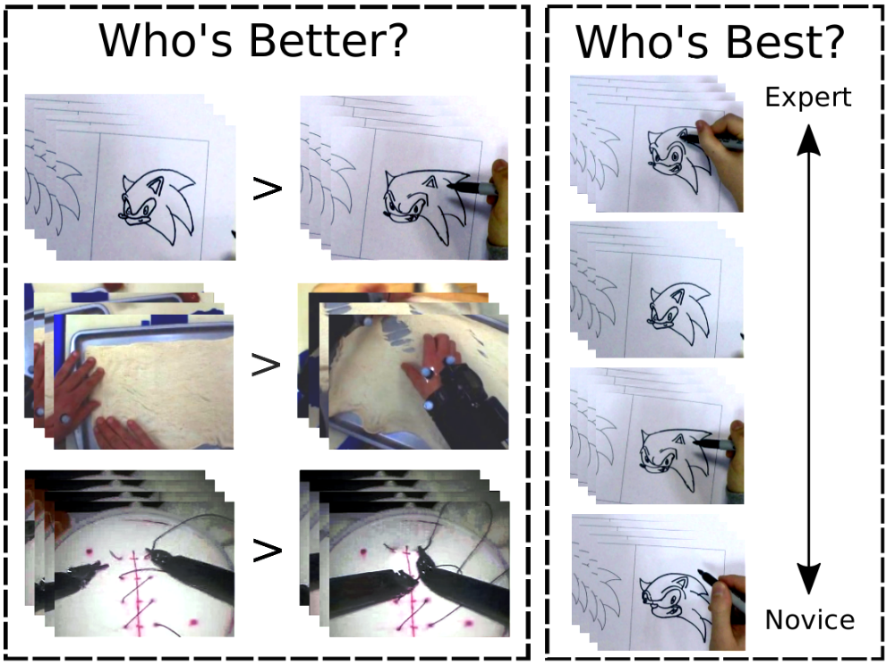

|
We present a method for assessing skill of performance from video, applicable to a variety of tasks, ranging from surgery to drawing
and rolling pizza dough. We formulate the problem as pairwise (who's better) and overall (who's best)ranking of video collections,
using supervised deep ranking. We propose a novel loss function that learns discriminative features when a pair of videos exhibit variance in skill,
and learns shared features when a pair of videos exhibit comparable skill levels. Results demonstrate our method is applicable across tasks, with the
percentage of correctly ordered pairs of videos ranging from 70% to 83% for four datasets. We demonstrate the robustness of our approach via
sensitivity analysis of its parameters.
We see this work as effort toward the automated and objective organisation of how-to videos and overall, generic skill determination in video.
|
|

|